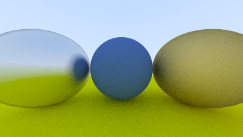

Fuzzy Reflection
We can also randomize the reflected direction by using a small sphere and choosing a new endpoint for the ray. We'll use a random point from the surface of a sphere centered on the original endpoint, scaled by the fuzz factor.

Figure 16: Generating fuzzed reflection rays
The bigger the fuzz sphere, the fuzzier the reflections will be. This suggests adding a fuzziness parameter that is just the radius of the sphere (so zero is no perturbation). The catch is that for big spheres or grazing rays, we may scatter below the surface. We can just have the surface absorb those.
Also note that in order for the fuzz sphere to make sense, it needs to be consistently scaled compared to the reflection vector, which can vary in length arbitrarily. To address this, we need to normalize the reflected ray.
diff --git a/src/material.rs b/src/material.rs
index 8475d17..e52f6f3 100644
--- a/src/material.rs
+++ b/src/material.rs
@@ -1,55 +1,58 @@
use crate::{hittable::HitRecord, prelude::*};
pub trait Material {
fn scatter(&self, _r_in: Ray, _rec: HitRecord) -> Option<(Ray, Color)> {
None
}
}
#[derive(Debug, Default, Clone, Copy)]
pub struct Lambertian {
albedo: Color,
}
impl Lambertian {
pub fn new(albedo: Color) -> Self {
Self { albedo }
}
}
impl Material for Lambertian {
fn scatter(&self, _r_in: Ray, rec: HitRecord) -> Option<(Ray, Color)> {
let mut scatter_direction = rec.normal + random_unit_vector();
// Catch degenerate scatter direction
if scatter_direction.near_zero() {
scatter_direction = rec.normal;
}
let scattered = Ray::new(rec.p, scatter_direction);
let attenuation = self.albedo;
Some((scattered, attenuation))
}
}
#[derive(Debug, Default, Clone, Copy)]
pub struct Metal {
albedo: Color,
+ fuzz: f64,
}
impl Metal {
- pub fn new(albedo: Color) -> Self {
- Self { albedo }
+ pub fn new(albedo: Color, fuzz: f64) -> Self {
+ let fuzz = if fuzz < 1.0 { fuzz } else { 1.0 };
+ Self { albedo, fuzz }
}
}
impl Material for Metal {
fn scatter(&self, r_in: Ray, rec: HitRecord) -> Option<(Ray, Color)> {
- let reflected = reflect(r_in.direction(), rec.normal);
+ let mut reflected = reflect(r_in.direction(), rec.normal);
+ reflected = unit_vector(reflected) + (self.fuzz * random_unit_vector());
let scattered = Ray::new(rec.p, reflected);
let attenuation = self.albedo;
- Some((scattered, attenuation))
+ (dot(scattered.direction(), rec.normal) > 0.0).then(|| (scattered, attenuation))
}
}Listing 69: [material.rs] Metal material fuzziness
We can try that out by adding fuzziness 0.3 and 1.0 to the metals:
diff --git a/src/main.rs b/src/main.rs
index 4f0fceb..a705a06 100644
--- a/src/main.rs
+++ b/src/main.rs
@@ -1,46 +1,46 @@
use code::{
camera::Camera,
hittable_list::HittableList,
material::{Lambertian, Metal},
prelude::*,
sphere::Sphere,
};
fn main() -> std::io::Result<()> {
let mut world = HittableList::new();
let material_ground = Rc::new(Lambertian::new(Color::new(0.8, 0.8, 0.0)));
let material_center = Rc::new(Lambertian::new(Color::new(0.1, 0.2, 0.5)));
- let material_left = Rc::new(Metal::new(Color::new(0.8, 0.8, 0.8)));
- let material_right = Rc::new(Metal::new(Color::new(0.8, 0.6, 0.2)));
+ let material_left = Rc::new(Metal::new(Color::new(0.8, 0.8, 0.8), 0.3));
+ let material_right = Rc::new(Metal::new(Color::new(0.8, 0.6, 0.2), 1.0));
world.add(Rc::new(Sphere::new(
Point3::new(0.0, -100.5, -1.0),
100.0,
material_ground,
)));
world.add(Rc::new(Sphere::new(
Point3::new(0.0, 0.0, -1.2),
0.5,
material_center,
)));
world.add(Rc::new(Sphere::new(
Point3::new(-1.0, 0.0, -1.0),
0.5,
material_left,
)));
world.add(Rc::new(Sphere::new(
Point3::new(1.0, 0.0, -1.0),
0.5,
material_right,
)));
env_logger::init();
Camera::default()
.with_aspect_ratio(16.0 / 9.0)
.with_image_width(400)
.with_samples_per_pixel(100)
.with_max_depth(50)
.render(&world)
}Listing 70: [main.rs] Metal spheres with fuzziness

Image 14: Fuzzed metal